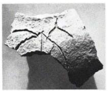

LINEAR A
KEZb7
Names
KEZb7, KE Zb 7
Support
Clay vessel
Location
Kea
Findspot
Unavailable

Scribe
Unavailable
Context
Not Available
Dimensions
Catalogue
Hiraklion Museum
Readings
1 1 0 PI none
𐘢
PI
𐘢
PI
KE Zb 7
(K.3419) (Raison-Pope 1994, p. 159), fragment of a small vase (sign incised before firing) from west of the settlement
]
PI
[
KHANIA
All come from presumed LM IB contexts
Note
tablets
all burnt; very clear & broad hand-writing
KH 1-4, 79/89, 88, 90 from the Plateia Ayia Aikaterini
KH 5-78, 80-87, 91 from the Katre Archive
nodules
KH Wa 1001-1028 from the Katre Archive
noduli
KH Wn 1501-1557 from the Katre Archive
roundels
KH Wc 2001-2003 from Odos Kanevaro
KH Wc 2004, 2005 from Plateia Ayia Aikaterini
KH Wc 2006-2114 from the Katre Archive
Commentary © John Younger
References
https://www.degruyter.com/view/journals/kadm/9/2/article-p191.xml